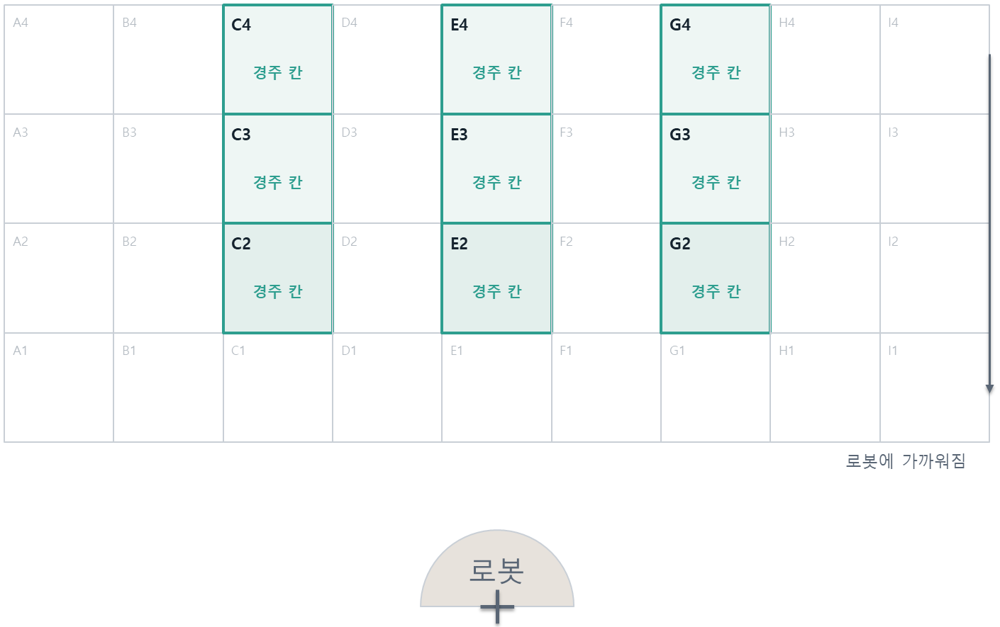

주제 10 · 23차시
자석 경주
도는 순서를 바꾸면 얼마나 빨라질까
실제 구분 차시보다 많은 시간이 소요될 수 있음.
순서를 바꾸면 얼마나 빨라질까? 미션
정렬은 이동 횟수를 줄여 시간을 벌었다.
이동 비용이 비싸다면 같은 칸들을 방문해도 도는 순서에 따라 이동 거리를 짧게 할 수 있다.
1. lessons/ch10_order.py 의 칸들 에 여섯 칸을 적는다.
2. 로봇이 리스트 순서대로 각 칸 위 10cm 를 돈다 — 시간이 찍힌다.
3. 여섯 칸의 위치 순서를 특정한 기준
(로봇과 가까운 순서, 왼쪽에서 오른쪽 등)을 적용하여 배치하고 시간을 잰다.
4. 2단계에서 걸린 시간과 3단계에서 걸린 시간을 비교해보자.
칸들 = ["A4","G2","I3","B2","H4","C3"]
# ↑ 이 리스트의 순서 = 도는 순서
for 칸 in 칸들:
x, y = cell_to_xy(칸) # 주제 5의 변환
# 팔을 세우고 그 칸 쪽으로 돈 뒤
raccoon.degree_to(th1, -10, -70, -10)
raccoon.move_to(x, y, 10) # 칸 위 10cm한 걸음 더
항상 최적 순서대로 움직일 수 있을까?(외판원 문제)
6개 = 720가지 경우의 수, 전수 탐색 가능.
10개 = 362만.
20개 = 243경 가지 — 초당 10억 가지로 77년
지금은 못 하는 것
색깔을 사람이 알려줘야 한다. 로봇은 빨강과 파랑을 구분하지 못한다
자석 경주 — 어디를 들를까 자석 경주 · 10_자석_경주.py
칸 = ["C2", "E2", "G2", "C3", "E3", "G3", "C4", "E4", "G4"]
클립개수 = 6 # 짝이 아무렇게나 흩어 놓는다
제한시간 = 180.0 # 3분 — 실제 로봇 벽시계
방문순서 = [] # 비면 실행할 때 묻는다
for cell in 방문순서:
if 지난시간 >= 제한시간:
break
arm.pick_magnet(cell) # 붙인 채로 다음 칸
# 끝나면 자석에 붙은 클립을 센다짝이 클립 여섯 개를 칸들에 아무렇게나 놓는다. 술래는 들를 칸의 순서만 정한다. 3분이 끝나면 자석에 붙은 클립을 센다 — 그게 점수다.
클립 자리를 모르니 정할 수 있는 것은 어디를, 몇 칸, 어떤 순서로 뿐이다.
뱀 모양으로 돌면
C2 E2 G2 G3 E3 C3 — 여섯 칸, 평균 4.0개 (가상 300판 · 칸당 30초 추정). 3분 안에 출발한 칸까지 센다.
다섯 칸만 적으면
E3 E2 E4 C3 G3 — 평균 3.3개. 칸마다 30초가 드는 가상에서는 들른 칸 수가 점수를 가른다. 순서의 효과는 칸 수를 같게 두고 견준다.
한 판은 경향을 보기 어렵다 — 가상 버전을 실행하면 같은 순서를 클립 자리가 다른 300판에 돌려 평균을 보여 준다
자석 경주 — 어느 칸에 놓나 10_자석_경주.py · A3 작업 지도

· 짝이 클립 6개를 아홉 칸에
아무렇게나 놓는다.
— 술래는 안 본다.
· 술래는 들를 칸 순서만 정한다.
3분이 지나면 자석에
붙은 클립을 센다.
준비물 — 자석 1개 · 철 클립 6개
(자석은 집게 날 아래 면에)
역할 2명 — 짝 / 술래
아홉 칸(B4 는 다섯 칸)에 클립 여섯 개를 아무렇게나